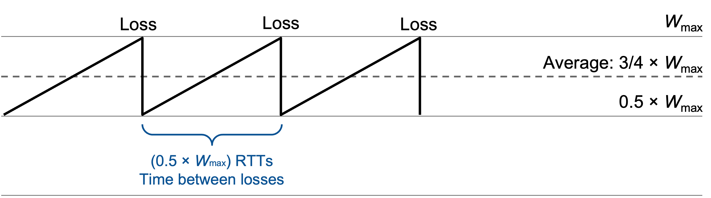
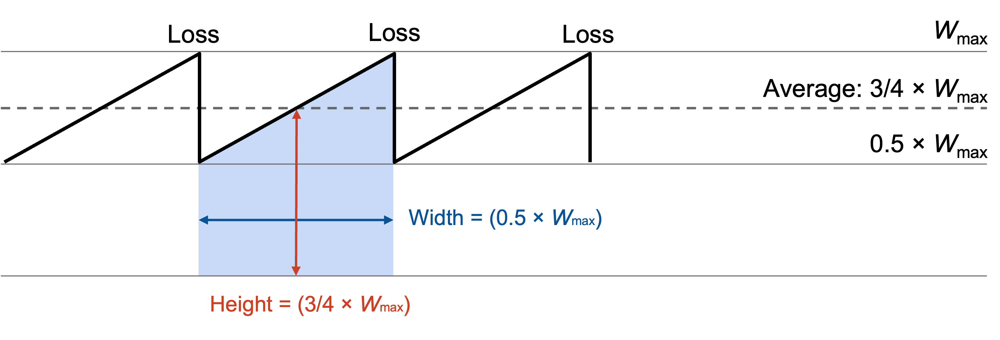
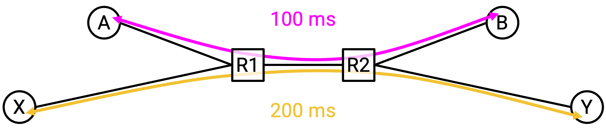

TCP Throughput Model
Modeling Assumptions
In the previous sections, we developed an algorithm for congestion control. This algorithm told us how to adjust rate in response to congestion, but it didn’t actually tell us what that rate is.
In this section, we’ll develop a model for estimating the throughput of a TCP connection along a specific path. Specifically, we want a simple equation that gives us throughput as a function of a path’s RTT and loss rate. This equation can allow operators and customers to estimate the rate of a TCP connection.
To simplify our model, we’ll make a few assumptions: There is a single TCP connection. We’ll ignore the slow-start phase. We’ll assume the RTT is some fixed number.
When the window size reaches the maximum bottleneck bandwidth \(W_\text{max}\) (some constant), we’ll assume we get exactly one packet loss. Since we only lose one packet, our loss will be detected by duplicate acks (no timeouts).
Throughput in Terms of Window Size
In this simplified model, we detect loss when the window size reaches \(W_\text{max}\), and our window size changes to \(\frac{1}{2} W_\text{max}\) as a result.
Then, for each subsequent RTT, our window size will increase by 1: \(\frac{1}{2} W_\text{max} + 1\), then \(\frac{1}{2} W_\text{max} + 2\), then \(\frac{1}{2} W_\text{max} + 3\), etc. Eventually, the window size will reach \(W_\text{max}\) again and be halved, and this process will repeat.
Starting at \(\frac{1}{2} W_\text{max}\) and reaching \(W_\text{max}\) takes \(\frac{1}{2} W_\text{max}\) RTTs (adding 1 per iteration, and each iteration is one RTT). This also tells us that there are \(\frac{1}{2} W_\text{max}\) RTTs between each loss.

Within each RTT, the average window size is \(\frac{3}{4} W_\text{max}\) (right in between \(\frac{1}{2} W_\text{max}\) and \(W_\text{max}\)).
This window size is measured in packets (since we were adding 1 packet per iteration). Each packet can contain \(\text{MSS}\) bytes (maximum segment size), so the average window size in bytes is \(\frac{3}{4} W_\text{max} \times \text{MSS}\).
The window size tells us how much data we can send in each RTT. Thus, to compute the rate, we divide window size (data) by RTT (time) to get an average rate of \(\frac{3}{4} W_\text{max} \times \frac{\text{MSS}}{\text{RTT}}\).
Throughput in Terms of Loss Rate
Our equation for throughput so far is: \(\frac{3}{4} W_\text{max} \times \frac{\text{MSS}}{\text{RTT}}\).
But our goal is to express throughput in terms of RTT and loss rate (denoted \(p\)). So, we now need to express \(W_\text{max}\) in terms of the loss rate \(p\).
From earlier, we deduced that a packet is lost once every \(\frac{1}{2} W_\text{max}\) RTTs. This was the time it took after a drop to climb back up to \(W_\text{max}\) and encounter another drop.
So, to determine the loss rate, we just need to figure out how many packets are sent in \(\frac{1}{2} W_\text{max}\) RTTs.

Graphically, the number of packets sent is the area of this shape (rate times time), or equivalently, the area under the curve (the curve shows rate, and we want integral of rate).
We know from earlier that the average window size is \(\frac{3}{4} W_\text{max}\), so this is the number of packets sent per RTT. Therefore, across \(\frac{1}{2} W_\text{max}\) RTTs, we expect to send \((\frac{1}{2} W_\text{max}) \times \frac{3}{4} W_\text{max} = \frac{3}{8} W_\text{max}^2\) packets.
Now that we know the number of packets sent between losses, we know that the loss rate is one lost packet, divided by the number of packets sent between losses. (For example, if we send 100 packets between losses, the loss rate is roughly 1/100).
Therefore, our loss rate is \(p = 1 / (\frac{3}{8} W_\text{max}^2) = \frac{8}{3W_\text{max}^2}\).
Now, we have a relation between \(W_\text{max}\) and \(p\), so we just need to do algebra to isolate \(W_\text{max}\) in terms of \(p\).
\[\begin{align*} p &= \frac{8}{3W_\text{max}^2} \\ 3W_\text{max}^2 p &= 8 \\ W_\text{max}^2 &= \frac{8}{3p} \\ W_\text{max} &= \frac{2\sqrt{2}}{\sqrt{3p}} \end{align*}\]Now, we can do some more algebra to take our throughput equation from earlier and replace \(W_\text{max}\) with \(p\):
\[\begin{align*} \text{throughput} &= \frac{3}{4} W_\text{max} \times \frac{\text{MSS}}{\text{RTT}} \\ &= \frac{3}{4} \left(\frac{2\sqrt{2}}{\sqrt{3p}}\right) \times \frac{\text{MSS}}{\text{RTT}} \\ &= \sqrt{\frac{3}{2}} \times \frac{\text{MSS}}{\text{RTT}\sqrt{p}} \end{align*}\]Implications of Equation
We now have an equation for throughput, expressed in terms of RTT and loss rate. What does it tell us?
Throughput is inversely proportional to the square root of the loss rate. Intuitively, if the loss rate is higher, then the throughput is lower. This makes sense, because losing more packets means that the window size gets halved more often.
Throughput is inversely proportional to RTT. Intuitively, if the RTT is lower, then the throughput is higher. This makes sense, because the window size increases every time we receive an ack, and a lower RTT means we get more acks more often.
This relationship between RTT and throughput can be a problem if we have multiple connections with different RTTs.

The connection with the lower RTT is going to be receiving acks more quickly, which means this connection also increases its window size and sends packets faster. In this case, it turns out the lower-RTT connection gets twice as much bandwidth as the higher-RTT connection.
Fundamentally, TCP is unfair when RTTs are heterogeneous (not the same). A shorter RTT improves propagation time, but it also helps TCP ramp up its rate faster. We accept this as a feature of TCP, and there’s nothing we do about this in practice.
Rate-Based Congestion Control
Our congestion control protocol results in choppy throughput. As seen in the graph, the rate repeatedly swings between W/2 and W. Some applications don’t like the constantly-changing rate, and would prefer to send data at a steady rate (e.g. streaming applications).
One possible solution for these applications is equation-based or rate-based congestion control, which abandons the rules for dynamically adjusting the rate, and instead simply follows the equation. To send data at a smooth rate, you can measure RTT and loss rate, plug them into the throughput equation, and constantly send at the calculated rate. This solution also maintains fairness (doesn’t hog bandwidth), because the equation ensures that we consume no more bandwidth than TCP would in a similar setting. (See RFC 5348 for more details.)
Formally, alternative implementations (including rate-based congestion control, and others) are considered TCP-friendly if they co-exist well with TCP by reducing their rate when necessary. TCP-friendly alternative algorithms lead to fair bandwidth sharing, even when some hosts run TCP and others run alternative algorithms.